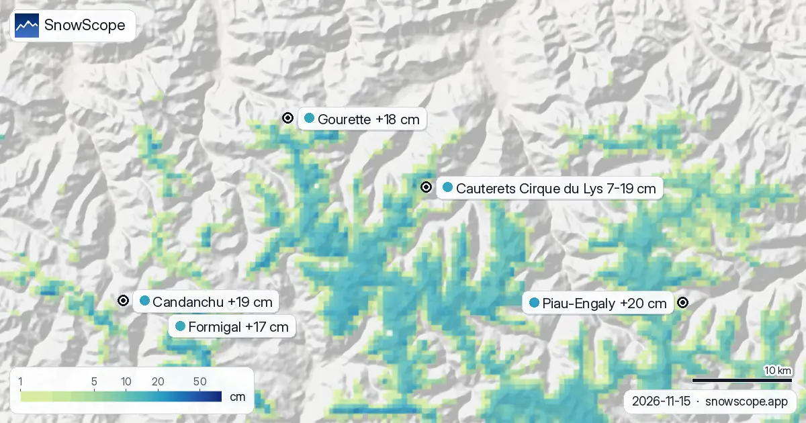
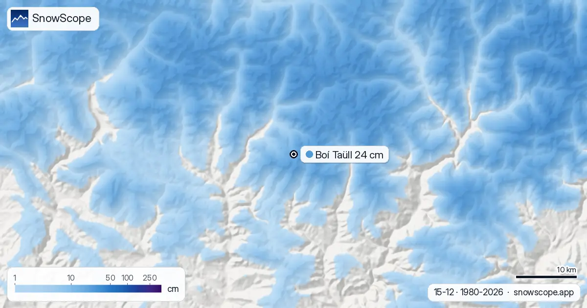
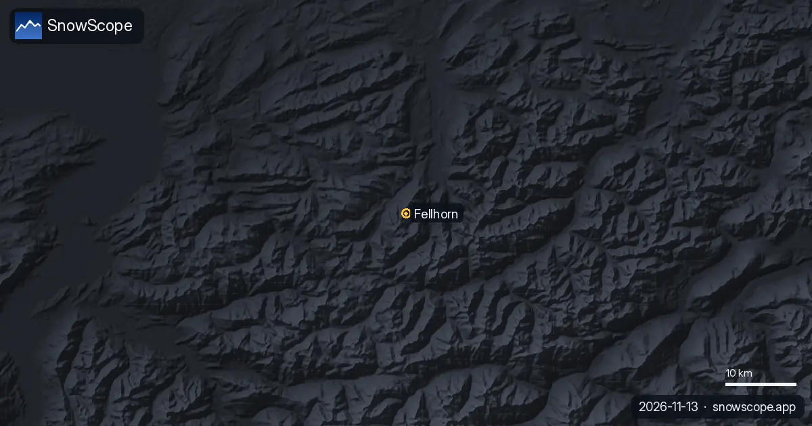
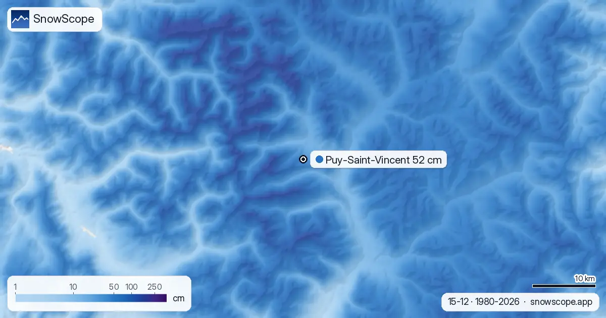
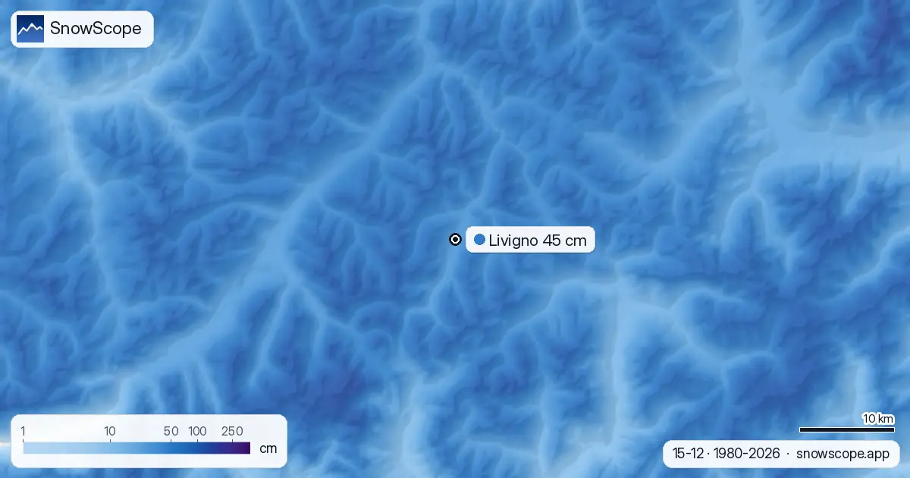
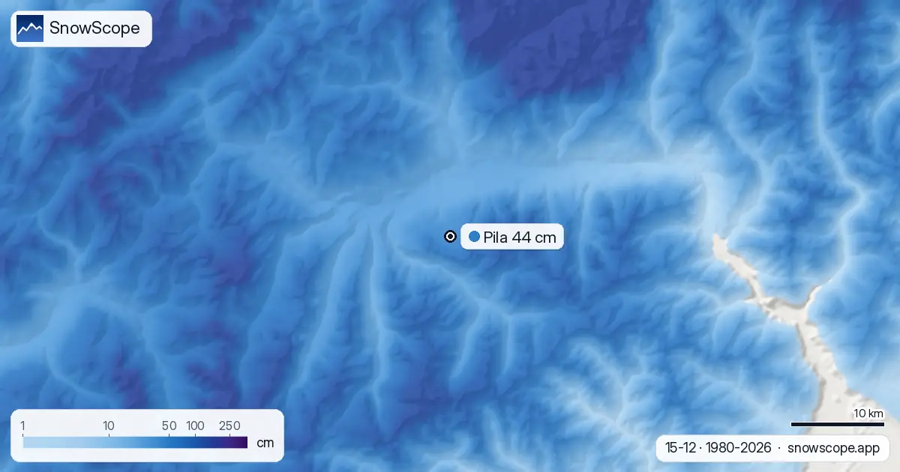
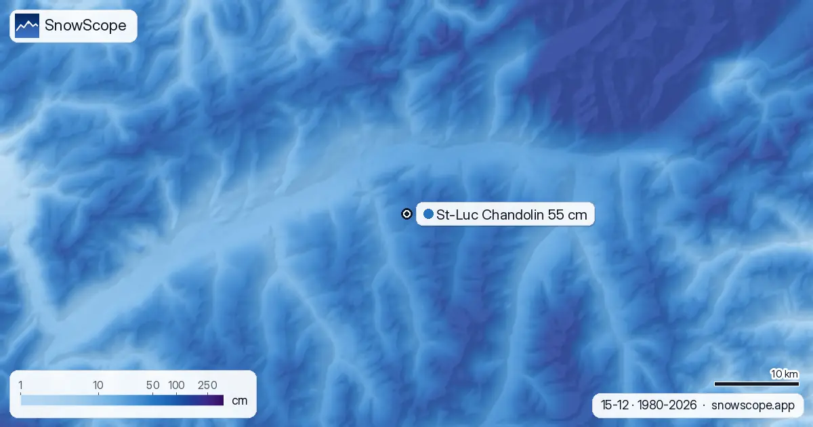
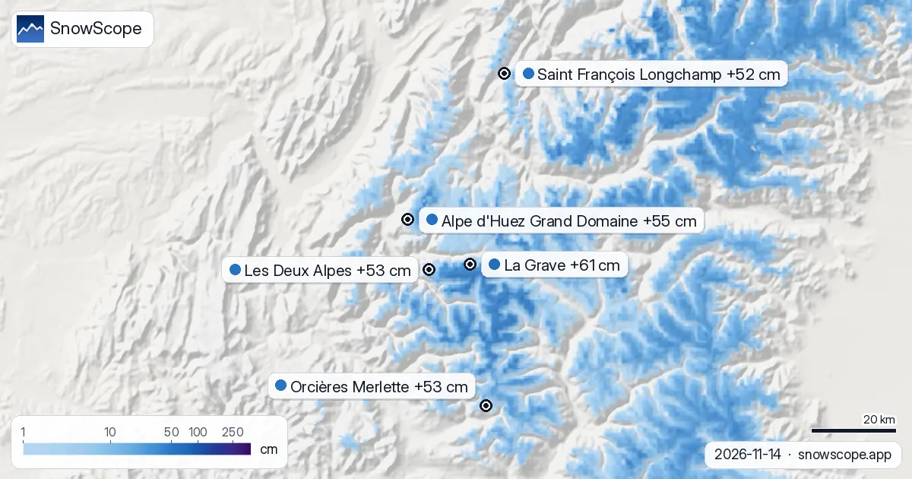

Bulletins neige
Des bulletins neige quotidiens pour les skieurs : où est la neige, ce qui arrive et où skier, d'après la carte de neige SnowScope et les stations de mesure. Chaque chiffre vient des données du jour.


Y a-t-il plus de neige qu'il y a un an ? Nous avons comparé aujourd'hui avec le 15 novembre de l'hiver dernier dans 4 stations dans l'Ouest canadien …

Aujourd'hui, la neige la plus épaisse dans les Alpes est à La Grave (France), environ 97 cm sur le haut du domaine. Orelle suit avec 81 cm, et Les …

Y a-t-il de la neige dans l'Atlas aujourd'hui ? Il n'y a pas de neige sur les pistes de l'Atlas aujourd'hui. La neige n'est stockée que sur les plus …

La surface blanche a changé : 6 880 sq mi (17 820 km²) le 13 novembre, 6 039 sq mi (15 640 km²) aujourd'hui, et 382 sq mi (990 km²) attendus le 18 …

2 sur 4 : c'est le nombre de stations dans le Nord-Est américain nettement au-dessus de la normale aujourd'hui. À quoi ressemble cet hiver jusqu'ici …

La zone blanche sur la carte est passée de 258 160 km² (13 novembre) à 253 880 km² aujourd'hui, et la prévision dit 298 900 km² le 18 novembre. Trois …

Bulletin neige dans les Pyrénées, 15 novembre. Pluie et neige mêlées : la neige n'est attendue qu'en altitude, environ 7–19 cm vers le sommet de …

Big White, manteau neigeux : une couche de 99 cm en altitude (15 novembre). C'est à Mount Washington Alpine Resort qu'il y a le plus de neige dans …

Les Grands Montets : combien de neige arrive ? 73–79 cm d'ici le 18 novembre. Combien de neige arrive dans les Alpes, et où ? Pluie et neige mêlées : …

À Andermatt (2963 m), la prévision donne 75 mm de précipitations du 15 novembre au 20 novembre. Pendant les heures humides, l'isotherme 0 °C se situe

Lisez la neige du jour dans les Pyrénées et vous obtenez poudreuse fraîche, neige fine de début de saison et de l'air doux qui peut laisser une …

Nous avons pesé la neige déjà au sol, la neige fraîche des 72 dernières heures et ce qu'ajoute la prévision, et retenu Tuckerman Ravine et Black …

Les Deux Alpes : combien de neige fraîche ? 38 cm en 72 heures (15 novembre). Où est tombée le plus de neige fraîche dans les Alpes ? La Grave a reçu …

Manning Park Resort : 11 cm de neige fraîche en 72 heures (Ouest canadien, 15 novembre). Whistler Blackcomb a reçu 82 cm de neige fraîche en 72 …

Nos prévisions pour le 15 novembre 2026 montrent Courmayeur en Italie en tête en Europe avec 88 cm de neige fraîche attendus d'ici mercredi.

Beaver Mountain applique un tarif adulte unique de 75 $ pour la saison 2026-27. Notre historique d'enneigement montre que début décembre, c'est pile ou face ; la semaine avant Noël est bien plus sûre.

Le forfait adulte 2026/27 de Bridger Bowl est à 86 $ en ligne, 99 $ au guichet. Notre historique dit que la mi-décembre est un coup de pile ou face à mi-montagne ; fin décembre est plus sûr.

Indy Base Pass 419 $, Indy+ 469 $, deux jours dans chaque station partenaire. Nous l'avons comparé aux prix journaliers vérifiés de sept stations Indy en décembre, et à leurs chances de neige.

Les forfaits adultes de Lookout Pass pour 2026-2027 sont à 63 $ en semaine avec réservation, 75 $ le week-end. À mi-montagne, on avait 20 in (50 cm) le 15 décembre dans 85 % des hivers passés.

Les forfaits adultes 2026/27 de Montana Snowbowl sont à 78 $ en semaine et 85 $ le week-end. À mi-montagne, on avait 20 in (50 cm) au 15 décembre dans 83 % de nos hivers passés.

Ski Cooper maintient son tarif adulte en semaine à 49 $ pour 2026-27 (99 $ le week-end). À mi-montagne, on compte en général 26 in (66 cm) de neige le 15 décembre, 70 % des hivers au-dessus de 20 in.

Les forfaits de Sunlight démarrent à 74 $ et son Sunny 6 Pack coûte 349 $ si acheté avant le 30 novembre 2026. À mi-montagne, on avait 20 in (50 cm) au 15 décembre dans 72 % des hivers.

Les forfaits journée complète à Timberline coûtent 129 $ hors pointe et 161 $ en pointe ; le forfait après-midi est à 96 $ hors pointe. La mi-pente conserve en général 52 in (132 cm) le 15 décembre.

De Ski Cooper (49 $ en semaine, 99 $ le week-end) à Mt. Baker (98,80 $ contre 115,42 $) : les écarts de prix de décembre vérifiés dans sept stations de l'Ouest américain, avec leurs chances de neige.

Le 3-Pack 2026/2027 de Schweitzer coûte 249 $, soit 83 $ par jour selon la station elle-même. Le sommet garde en général 54 in (138 cm) de neige au 15 décembre.

Krvavec en décembre : journée 47 EUR, 6 jours 205 EUR, mais seulement 13 cm à mi-pente un 15 décembre typique, et 11 hivers sur 46 sans neige ce jour-là.

Skiez sur 157 km de pistes balisées à Serre Chevalier, où le sommet de la montagne a 100 % de chances d'être enneigé d'ici la mi-décembre.

Turracher Höhe en décembre : 23 cm à mi-pente un 15 décembre typique, 39 % des hivers avec 30 cm avant Noël ; 6 jours en basse saison 353 EUR.

Hochkar en décembre : journées vues de 32,90 à 47,90 EUR selon les dates ; 38 cm à mi-pente un 15 décembre typique, en baisse depuis les années 1980.

Idre Fjäll en décembre : 32 cm à mi-pente un 15 décembre typique ; 65 % des hivers avec 30 cm à la mi-décembre, 76 % la semaine de Noël. Des chances honnêtes.

Brighton à partir de 72 $ contre Ski Cooper à 49 $ en semaine et Wolf Creek à 96 $ : les stations économiques de l'Utah et du Colorado comparées sur 46 hivers de neige en décembre.

Dix stations de ski européennes classées pour leur rapport qualité-prix en décembre, avec Les 2 Alpes en tête avec 75 cm de neige à mi-montagne.

Les forfaits journée de Brundage démarrent dès 65 $ certains jours ; à mi-montagne on avait 20 in (50 cm) de neige le 15 décembre dans 87 % de nos hivers passés. Des dates de fêtes à éviter.

Boí Taüll commence à 2 039 m et bat Baqueira Beret sur le prix du forfait, bien que la neige de début décembre demande un peu de patience.

Sälen en décembre : 28 cm un 15 décembre typique et 48 % des hivers avec 30 cm à la mi-décembre, moins qu'aux années 1980 ; Trysil, à côté, fait mieux.

Les forfaits journée adulte de Snow King démarrent à 100 $. Selon notre historique d'enneigement, le mi-versant affichait 20 in (50 cm) dès le 15 décembre dans 87 % des hivers : une façon économique de skier la vallée de Jackson.

Orcières Merlette offre une base élevée à 1 826 m et un forfait 6 jours dès 227 EUR, ce qui en fait un choix fiable pour un séjour au ski en décembre.

Alpe d'Huez vaut-elle le coup en décembre 2026 ? Nous vérifions les probabilités de neige, le prix de départ de 58,00 EUR et comparons avec Les 2 Alpes.

Les forfaits slovènes sont les moins chers (Krvavec 205 EUR les 6 jours), mais la neige naturelle de décembre y est rare ; Lachtal, le Hochkar et le glacier de la Möll font mieux.

Loveland vend des forfaits en ligne à 60 $ jusqu'au 13 décembre 2026, puis à 159 $ au guichet. La neige de début décembre est-elle assez bonne pour en profiter ? Nos 46 hivers passés répondent semaine par semaine.

Cauterets propose 25 km de pistes pour 46 EUR, mais notre historique d'enneigement montre que la meilleure chance d'avoir de la neige est la dernière semaine de décembre.

Skier à Lachtal en décembre : forfait journée 62 EUR, enfants jusqu'à 6 ans gratuits, 46 cm à mi-pente un 15 décembre typique, mais tendance nettement en baisse.

Les forfaits en ligne du White Pass démarrent à 69 $ hors pointe et 89 $ les jours de pointe, et la mi-montagne avait 20 in (50 cm) de neige le 15 décembre dans 87 % des hivers passés.

Skiez sur les 131 km de pistes de la Forêt Blanche en décembre avec un forfait six jours à 298 EUR.

Ruka en décembre : forfait 6 jours 265 EUR, journée 58 EUR ; 36 cm un 15 décembre typique, mais seulement 39 % des hivers avec 30 cm la première semaine.

À Monterosa Ski, le forfait journée en ligne va de 40,00 à 71,00 EUR. En décembre, la neige est en altitude : 124 cm habituels à 3 030 m, 6 cm à 1 207 m.

Chez Wolf Creek, le forfait adulte coûte 96 $ les jours normaux et 110 $ les jours de pointe pour la saison 2026-2027 ; à mi-montagne, l'enneigement atteignait 34 in (87 cm) un 15 décembre type.

Fellhorn/Kanzelwand en décembre : 63 cm au sommet (1965 m) un 15 décembre typique, 10 cm en bas ; forfait 6 jours de l'Avent à 344,50 EUR jusqu'au 20 décembre.

Planifiez votre séjour de décembre 2026 aux Les Orres en comparant les prix des forfaits hebdomadaires avec notre historique de neige de 46 hivers passés.

Hemavan en décembre : 82 cm à mi-pente un 15 décembre typique, chaque hiver avec 30 cm à la mi-décembre ; le décembre le plus enneigé de notre sélection nordique.

Les forfaits journée de Brighton démarrent à 72 $ pour 2026/27 en achat anticipé. À mi-montagne, on compte en général 37 in (94 cm) de neige le 15 décembre, contre 25 in (64 cm) à Park City.

Comparez Grandvalira et les stations espagnoles en décembre 2026 pour les hauteurs de neige, l'altitude des remontées et les prix à partir de 49,00 EUR.

Glacier du Pitztal en décembre : 87 cm à mi-pente un 15 décembre typique, plus de neige qu'aux années 1980 ; forfait journée 77 EUR, 6 jours 410 EUR.

16 stations de ski américaines économiques classées selon leurs chances de neige en décembre sur 46 hivers passés, avec les prix à la journée vérifiés : de 49 $ en semaine à 125 $ et plus.

Pour une semaine de ski en famille à petit budget à Astún-Candanchú en décembre, visez la fin du mois, quand les pistes supérieures ont une bonne neige dans 67 % des hivers passés.

Allemagne en décembre : la Zugspitze et le haut du Fellhorn avaient 30 cm mi-décembre dans au moins 9 hivers sur 10 ; Sudelfeld, Brauneck et le Feldberg rarement.

Puy-Saint-Vincent propose un forfait adulte 1 jour à 44 EUR avec une bonne neige en décembre en altitude, comparé ici à son grand voisin Serre Chevalier.

Sur nos 46 derniers hivers, Grand Targhee affichait toujours au moins 20 in (50 cm) à mi-pente le 15 décembre. Le billet journée en ligne coûte entre 125 $ et 180 $ selon la date.

Oppdal en décembre : 60 cm en bas (585 m) un 15 décembre typique, 93 % des hivers avec 30 cm à la mi-décembre, mieux que le bas de Trysil.

Grimentz-Zinal propose 71 km de pistes et un enneigement fiable en altitude pour votre voyage en décembre, avec des forfaits 6 jours à CHF 339,00.

Autriche avant Noël : Galtür 258 EUR et Kühtai 269 EUR les 6 jours, avec 30 cm dans plus de 90 % des hivers ; les glaciers coûtent plus, les petites stations sont un pari.

Vous prévoyez un voyage en décembre à Baqueira Beret ? Consultez notre historique d'enneigement, les prix des forfaits à partir de 70,00 € pour une journée, et comparez avec Astún-Candanchú.

Nous classons les stations de ski françaises selon les probabilités de neige en décembre et le prix des forfaits, à partir de 36,00 EUR pour un forfait journée adulte aux Karellis.

À Oukaïmeden, décembre donne 18 cm à mi-pente dans un mois typique, contre 44 cm en février et 53 cm en mars. Ce que 46 hivers disent du bon mois pour skier.


Galtür en décembre : 55 cm à mi-pente un 15 décembre typique, 93 % des hivers avec 30 cm à la mi-décembre ; journée basse saison 55,50 EUR jusqu'au 18 décembre.

Geilo en décembre : 57 cm à mi-pente un 15 décembre typique, 96 % des hivers avec 30 cm à la mi-décembre ; journée à partir de 590 NOK (environ 56 EUR).

Grandvalira est souvent vendue comme une destination pas chère en décembre, pourtant la neige naturelle à la base n'atteint en moyenne que 9 cm lors des hivers passés.

Hemsedal en décembre : 70 cm à mi-pente et 106 cm au sommet un 15 décembre typique, mais 32 cm en bas ; Geilo tout près à partir de 590 NOK la journée.

Glacier d'Hintertux en décembre : 98 cm à 3245 m et 52 cm à mi-pente un 15 décembre typique ; forfait journée 82 EUR, 6 jours 399 EUR.

Comparez les probabilités de neige en décembre et les tarifs vérifiés de forfaits dès 40,00 EUR dans les domaines skiables italiens pour votre week-end en voiture.

Skier à Kühtai en décembre : 60 cm au pied des pistes (1939 m) un 15 décembre typique, forfait 6 jours basse saison à 269 EUR jusqu'au 18 décembre.

Les 2 Alpes culmine à 3 511 m pour de la neige abondante en décembre 2026, avec un forfait adulte 6 jours à 266,50 EUR.

Les Karellis propose 45 km de pistes et un forfait adulte 6 jours à 191,00 EUR avec 98 % de chances d'avoir de la neige à mi-montagne fin décembre.

Levi en décembre : 38 cm un 15 décembre typique, 91 % des hivers avec 30 cm la semaine de Noël, et plus de neige qu'avant ; journée 60 EUR, 57 EUR en ligne.

Skiez à Livigno pour 51,50 EUR par jour avant le 18 décembre, quand la neige au sommet atteint 30 cm dans 100 % des hivers passés.

À Michlifen, 89 % des hivers n'ont presque pas de neige le 15 décembre (moins de 5 cm). Ce que 46 hivers disent du ski dans le Moyen Atlas en décembre.

Montgenèvre affiche 56 cm de neige habituelle en décembre à son pied de station, offrant aux skieurs du week-end une meilleure couverture précoce que Sestriere, de l'autre côté de la frontière.

Skier à Obertauern en décembre : 43 cm un 15 décembre typique à mi-pente, forfait 6 jours à 331 EUR avant Noël. Historique de neige et prix.

Oukaïmeden à la mi-décembre : 16 cm à mi-pente dans un hiver typique, 50 cm ou plus dans 11 % des hivers seulement. Date par date, ce que disent 46 hivers.

Oukaïmeden est à 50 km à vol d'oiseau de Marrakech. Comment réussir un week-end de ski en décembre : quand partir, quelles chances de neige, ce qu'on sait des prix.

Les 3 Vallées : 75,70 € le jour du 5 au 18 décembre 2026. Oukaïmeden : pas de tarif officiel en ligne, 16 cm à mi-pente mi-décembre. Le vrai comparatif.

Pila, au-dessus d'Aoste, combine un forfait journée fixe à 60,00 EUR et une neige fiable en décembre sur ses pistes d'altitude.

Les remontées de Saas-Fee atteignent 3 556 m, où notre historique montre que 100 % des hivers passés ont au moins 30 cm de neige à la mi-décembre.

12 stations nordiques en décembre : Hemavan, Hemsedal et Geilo avaient 30 cm à mi-pente mi-décembre dans 96 à 100 % des hivers ; journées finlandaises 58-60 EUR.

Chances de neige en décembre sur 46 hivers et prix journaliers vérifiés : Ski Cooper 49 $, Les 3 Vallées 75,70 €, Oukaïmeden sans tarif officiel. Là où une journée de ski pas chère en décembre fonctionne.

Découvrez les pistes tranquilles de St-Luc Chandolin, où la neige à mi-montagne atteint 30 cm dans 98 % des hivers fin décembre.

Trysil en décembre : 44 cm à mi-pente un 15 décembre typique, 83 % des hivers avec 30 cm à la mi-décembre ; les prix sont dynamiques, réservez tôt.

Valloire-Valmeinier propose 131 km de pistes et 98 % de chances d'avoir 30 cm de neige à mi-montagne mi-décembre.

Zugspitze en décembre : 122 cm à 2627 m un 15 décembre typique, journée adulte 70,50 EUR en ligne ; le Garmisch-Classic en dessous 69 EUR, avec bien moins de neige.

Mölltaler Gletscher en décembre : 66 cm en bas (2103 m) et 128 cm à mi-pente un 15 décembre typique ; forfait 6 jours basse saison à 332 EUR.

Le Mt. Baker en décembre : 46 in (116 cm) de neige à mi-montagne pour un 15 décembre type, et un forfait à 98,80 $ du lundi au jeudi, vendu uniquement sur place le jour même.

Un débutant prudent peut-il faire confiance à Courmayeur en décembre, alors que la moyenne à mi-montagne est de 60 cm de neige sur nos hivers passés ?

Surface enneigée : 910 km² le 12 novembre, 1 100 km² aujourd'hui, 640 km² prévus le 17 novembre. À suivre. Pluie et neige mêlées : la neige n'est …

Bulletin neige dans les Alpes, 14 novembre. Pour trouver le plus de neige dans les Alpes aujourd'hui, regardez Saint-Luc (Suisse) : environ 110 cm en …

Åre en décembre : 40 cm à mi-pente un 15 décembre typique, 89 % des hivers avec 30 cm à la mi-décembre, mais une forte baisse au sommet depuis les années 1980.

Lisez la neige du jour dans les Pyrénées et vous obtenez poudreuse fraîche, neige fine de début de saison et de l'air doux qui peut laisser une …

Les Deux Alpes : 38–42 cm de neige fraîche en 72 heures (Alpes, 14 novembre). La Grave a reçu 53 cm de neige fraîche en 72 heures, dont 7 cm au cours …

Où aller ces prochains jours ? Voici les stations où la prévision annonce le plus de neige fraîche dans les 24 prochaines heures et jusqu'au 17 …

Surface enneigée : 49 467 sq mi (128 120 km²) le 11 novembre, 49 050 sq mi (127 040 km²) aujourd'hui, 64 429 sq mi (166 870 km²) prévus le 16 …

Entre aujourd'hui et le 16 novembre, nous attendons 5 in (12 cm) à Stowe, 4 in (11 cm) à Bolton Valley Resort et 4 in (10 cm) à Sugarbush Resort. Nos …

201 390 km² : c'est la surface enneigée que compte notre modèle dans l'Ouest canadien aujourd'hui. La dernière vue dégagée de chaque endroit, …

Conditions de ski à Deer Valley le 13 novembre 2026 : pas encore de vraie neige au sol, environ 4 in près du sommet avec la tempête du week-end, pluie côté East Village sous environ 6,700 à 7,600 ft, et 11 in en haut sur la semaine.

Est-ce un bon début d'hiver dans le Nord-Est américain ? La neige du jour dans 4 stations dans le Nord-Est américain, comparée à la même date lors de …

Entre aujourd'hui et le 16 novembre, nous attendons 13 in (34 cm) à Bear Valley, 13 in (34 cm) à Dodge Ridge et 13 in (33 cm) à Badger Pass. Un mot …

Prévision de neige à Park City (Utah) le 13 novembre 2026 : presque pas de neige au sol pour l'instant, environ 5 in près du sommet avec la tempête du week-end et une limite pluie-neige de 7,400 à 7,700 ft, pluie en bas, et environ 12 in en haut sur la semaine.

Stratton par altitude, selon notre modèle : sommet 4 in (10 cm) (3 881 ft / 1 183 m), milieu 2 in (6 cm) (2 936 ft / 895 m), bas 1 in (2 cm) …

La réserve de neige se remplit-elle comme d'habitude ? Nous avons comparé la neige du jour dans 5 stations dans l'Ouest canadien avec la même date …

Prévisions de neige à Alpental le 13 novembre 2026 : environ 1 in sur le haut de la montagne, pluie presque jusqu'au sommet ce week-end avec une limite vers 5,400 à 5,600 ft, puis 4 à 5 in de pluie et neige mêlées en haut la semaine prochaine.

Point neige à Bogus Basin pour les skieurs de Boise le 13 novembre 2026 : pas encore de neige au sol, pluie et neige mouillée ce week-end avec une limite vers 6,300 à 6,800 ft, puis de l'air plus froid et environ 8 in au sommet d'ici la semaine prochaine.

39 in (99 cm) en haut du domaine : voilà pourquoi Telluride est en tête de notre liste. Hauteur du jour, neige fraîche des 72 dernières heures, …

Le plan des pistes de Sillian (Hochpustertal) avec notre couche de neige le 13 novembre 2026 : 8,6 cm au sommet à 2399 m, bas des pentes à nu, et une semaine de pluie et neige mêlées avec une limite vers 1 800 à 2 000 m.

Revelstoke, prévisions neige : jusqu'à 10–21 cm attendus d'ici le 16 novembre (Ouest canadien). À Whistler Blackcomb, l'isotherme 0 °C monte entre …

Conditions de neige à Silvretta Montafon le 13 novembre 2026 : 4,5 cm au sommet à 2421 m, mi-pente et vallée à nu, environ 40 cm attendus en altitude cette semaine, pluie dans la vallée sous 1 500 m.

Bulletin neige de Lech Zürs du 13 novembre 2026 : environ 6 cm au sommet (2436 m) et à mi-pente, rien à Lech à 1430 m. Cette semaine 42 cm en haut selon notre prévision, jusqu'à 91 cm selon d'autres, pluie et neige mêlées vers 1400 m. Et pourquoi Lech est le côté enneigé de l'Arlberg.

Modèle plus prévision dans les Alpes aujourd'hui donnent poudreuse fraîche. Quoi porter, quoi emporter et quand skier, station par station. Les …

Hauteur de neige à St. Anton am Arlberg le 13 novembre 2026 : environ 1 cm au sommet (2642 m), 5 cm à mi-pente, rien au village. Cette semaine 42 cm au sommet et 33 cm à mi-pente, pluie sous 1480 m environ. Combien de neige il faut pour les pentes raides.

Dévoluy, tendance neige : jusqu'à 24–32 cm possibles d'ici le 16 novembre (Alpes). D'ici le 16 novembre, notre prévision donne 35 cm à Orcières …

Depuis le 11 novembre, la couverture neigeuse est passée de 39 090 km² à 76 100 km² ; le 16 novembre, la prévision donne 57 910 km². Pfelders a le …